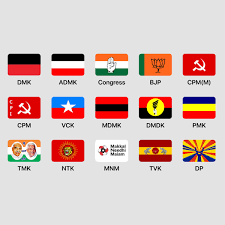

The Tamil Nadu Election 2026 included many political parties competing to form the government in the state. Each party presented its leaders, election promises, and development plans to attract voters.
Tamilaga Vettri Kazhagam (TVK) was one of the major parties in the 2026 election. The party was led by actor Vijay and gained strong support from young voters and first-time voters across Tamil Nadu.
Dravida Munnetra Kazhagam (DMK) is one of the oldest political parties in Tamil Nadu. The party focused on welfare schemes, education, social justice, and development projects during the election campaign.
All India Anna Dravida Munnetra Kazhagam (AIADMK) also played an important role in the election. The party highlighted its previous achievements and promised improvements in employment and infrastructure.
The Indian National Congress participated in the election by supporting alliance politics and discussing national and state development issues.
Pattali Makkal Katchi (PMK) focused on education, employment, and rural development. The party also concentrated on youth welfare and healthcare improvements.